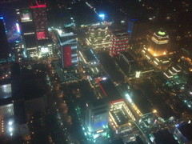

旅行中、使えるはずだった携帯がどうしても使えず、仲間との連絡が不便だ。
そしてネット中毒で苦しんでいる。
今回同行している高校の仲間は自分以外に3人。全般で世話になった通訳兼ガイドである、本職の中国語通訳の男が一人。
そして母親たちに深い安心感を与え、いざというとき頼りになる医者が二人。
この強力な仲間に加え、エンジニアの自分はどんなスキルを発揮するかと思えば、
自分の携帯すら使えずに悲鳴を上げているだけで、何一つ役に立たない。
そんな 戦士--僧侶--僧侶--遊び人のパーティで今日も出発。
午前はまず故宮博物院で歴代皇帝のコレクションを鑑賞。
ここは一日では全部見て回れないくらい広い。
歴史にも芸術にも理解のない自分はきっと人の百分の一も楽しめていないと思うが、
祭器のデザインやヒスイに刻まれた文字など、目をひかれた物も多かった。
一方母親軍団は早々に疲れていたようで、食事の時間の方が楽しそうだった。
博物院は撮影禁止だったので写真が一枚もない。
その後、街をふらふら。魔女が茶会をしていた。
今日も夕食は充実。案内人が食にこだわる男なので有難い。
というか自分以外全員グルメで、食事の写真も撮りまくっていた。
食後は仲間を入れ換えつつ、高層ビル TAIPEI101 で台北の夜景を眺める。
| 高さ世界二位の塔が天を突く | 特徴ある鮮やかな電飾 |
|
 |
それから一旦解散しかけたが、やはり息子たちのストレス発散の場は必要だったので、
ホテル近くの裏通りでしょぼい店に入って二次会。
ここの焼きイカは、三泊四日の全行程で唯一日本より高くてまずかった。
これを焼くよと事前に念押しされ、値段も確認していたので怒りのやり場もないが。
| 二次会会場 | あらためて見るとひどい。
ぞんざいに焼かれるイカ |
|
|
故宮博物院の無数の芸術品の写真を一つも載せられず、このふざけたイカの写真で今日を締めくくることになったのが無念だ。
|